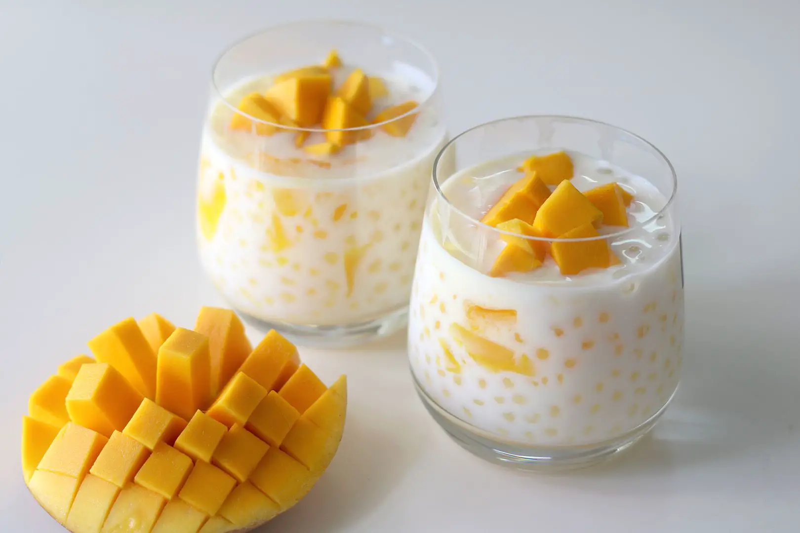

Mango Sago

A sweet and refreshing dessert perfect for the summer! This recipe is easy to make and only requires four simple ingredients. Try this recipe and it will become a staple dessert dish that will keep you coming back for more!
Ingredients
What you'll need:
- 1 Cup of mini Tapioca Pearls
- 6 Cups of Water
- 2 Fresh Mangoes
- 1/2 Cup of Condensed Milk
- 1 Cup of full fat Coconut Milk
Steps
- Heat water till boiling then set to medium low heat, add mini tapioca pearls in a pot for 10 minutes or until each pearl becomes clear, stir pot slowly and throughly so tapioca pearls don't stick to pot. After tapioca pearls are clear, drain water and pour into a sieve to continue draining and to cool.
- Peel mango. Cut mangoes up into cubes, one will be used for the topping and the other we will use to blend.
- Add one mango, condensed milk and coconut milk into blender and blend until smooth consistency
- Scoop 1 spoon to 2 spoons of tapioca into servering containers then pour coconut milk mixture over the tapioca pearls, finsh with topping the mango chunks on top.
- Serve and enjoy!
Recipe by Tiffy from Tiffy CooksOriginal Recipe